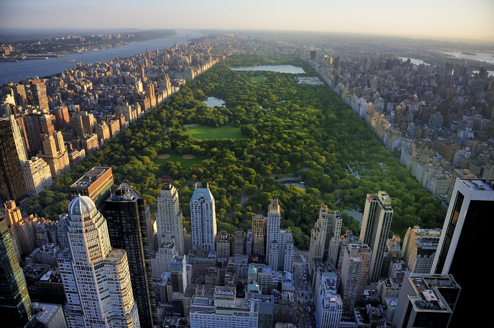
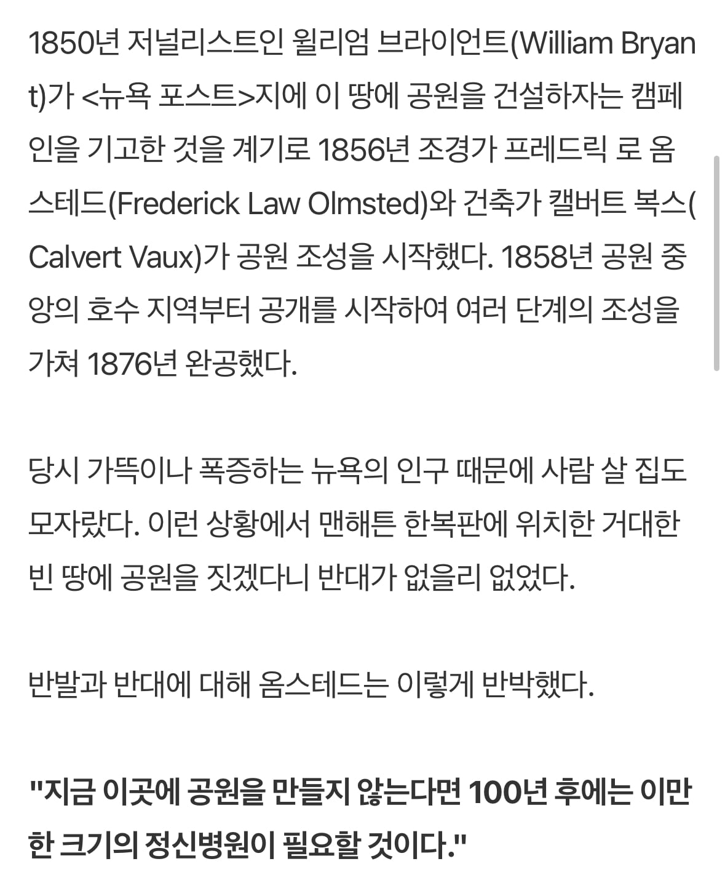
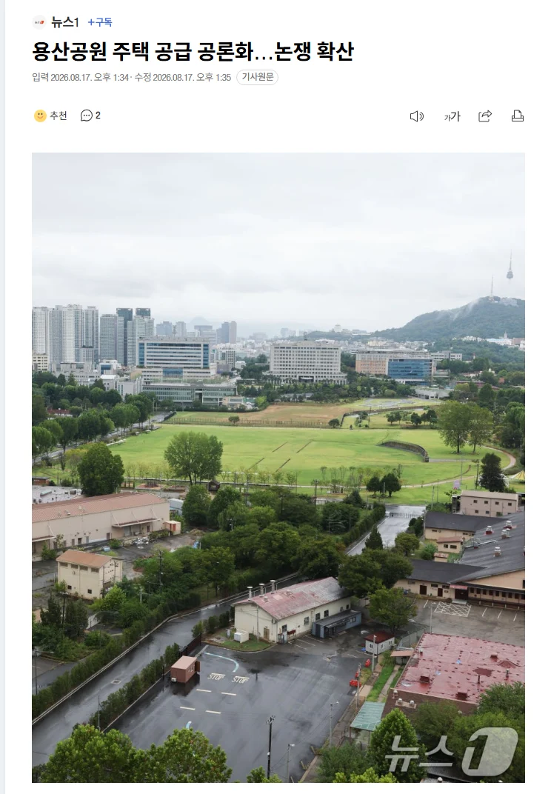

"공원을 만들지 않는다면 100년 후에는 공원만한 크기의 정신병원이 필요할 것이다"

https://www.dogdrip.net/719863681
애초에 서울에 그 많은 아파트를 짓고도 아직도 집이 부족하면
그건 단순히 아파트가 부족해서가 아니지 않나 싶다
도시 내 공원의 중요성도 중요성이지만
공원 밀고 아파트 짓는다고 해결되는 문제가 아닌 듯


"공원을 만들지 않는다면 100년 후에는 공원만한 크기의 정신병원이 필요할 것이다"

https://www.dogdrip.net/719863681
애초에 서울에 그 많은 아파트를 짓고도 아직도 집이 부족하면
그건 단순히 아파트가 부족해서가 아니지 않나 싶다
도시 내 공원의 중요성도 중요성이지만
공원 밀고 아파트 짓는다고 해결되는 문제가 아닌 듯
댓글
수집 당시 댓글 6개
흙기이사 · 2 일 전
저기 원래부터 공원이었나?? 일반인들 사용하게 된지 몇년안된거 같은데 갑자기 몇십년 저기 있던것 처럼 그러네 그전에 공원없을땐 다 정병걸렸었나?
양진이 · 2 일 전
우리나라는 민주주의 국가라지만 공론화 하는것엔 히스테리를 부린다 민주주의는 테이블에 의제를 올리고 서로의 주장을 듣고 타협을 해서 공공의 이익으로 가기위한 선택을 하는거 아닌가? 그런데 매번 보면 공론화 하려는 순간 어떻게 그런소릴 할수있냐면서 프레임작업을 들어간다 서로 필요한 주장조차 펼칠수가 없다 그렇게 자유를 외치면서도 서로의 의견에는 자유가 없다 참 병신같다
키티호크 · 2 일 전
솔직히 병신국가 다 되었다고 봄
백설보추 · 2 일 전
나중에는 서울도 도쿄처럼 바뀔것같음
헨리에타 · 12 시간 전
머선ㅍ말임?
석사따리 · 2 일 전
저런 관점에서는 어린이대공원 근처 군자역세권이 제일 좋긴 함ㅋㅋ 요즘 재개발 얘기가 나오고 있기도 하고